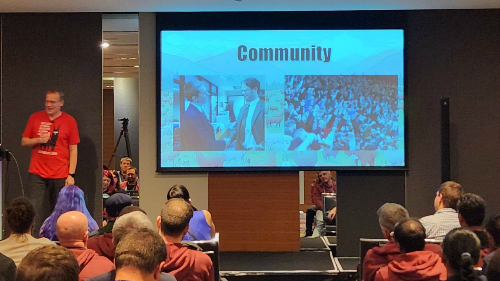

WESLEY TRAN
WESLEY TRAN
If you can please orient your device to portrait or find a larger screen to view my e-portfolio! You won't be disappointed!
WESLEY TRAN
Hello hello! What came as just a curious dip into the Developer world, was actually something much more deeper than that! I want to share some of my experiences with my time volunteering at NDC Sydney as a graduating student in the tech industry!
My purpose with this blogpost, is to show you the importance of being in touch with your community. It was able to ease my loneliness in my professional journey, as well as provide me with many bits of valuable knowledge!
For some context, I recently volunteered at NDC- the Norwegian's Developer Conference, an annual event that has been running for more than a decade! Embracing all things innovative about technology with the most renowned and famous individuals active in the developers community.
A large part of my efforts in wanting to volunteer at a tech conference in finding that I didn't quite know what the developers scene in Sydney was like- and after knowing how many talented people there were in the industry- right in Australia! Gave me a lot of comfort in knowing that my growth into the future is not going to be lonely, but prosperous!
From the multitude of organisers, volunteers and speakers that I had the lovely opportunity to talk to- I was able to gain valuable knowledge from seasoned veterans in the industry about anything I was curious about! So here were my key notes to some questions I've asked...
"From a software development perspective, all you truly need to succeed in the industry is only *one* programming language- to understand it, apply it and use it fully. From then on, any other language is learn is fairly the same. You will have to pick up these skills eventually, and others should know that learning takes time and patience."
"The main skill I reckon you just need is the ability to learn. Knowing that when you're handed a project, you're able to do your role, as well as a bit more. Understanding that you're not just doing a specific role, but you may also have to take on a lot of new responsibilities and new technologies. Being open to learn, and comfortable with taking criticism."
"When you're adding to a project, or developing a new project just for people to dismiss or remove your work, commenting that the solution doesn't work and isn't useful. A lot of the times these comments can be very hurtful, and as much as you get fustrated with how they responded, you realise that they took the time and effort to report an issue they found. As much as it is hurtful, it also is helpful. Make sure you respond to people, especially on the internet, with kindness."
These three main questions and responses were ones that I found to be important in terms of my values. Understanding that learning is a process that can be hard, but also easier, and also approaching people and criticism with kindness and gratitude.
From NDC Sydney, of the talks I've attended, the one that stood out to me were Lars Klint's experience in using technology on his Llama farm.
From Lars' experience in using technology on his farm, a lot of the helpful feedback came from the community.
The importance of community in everything you do- being able to give and share new ideas around, to discover all things new and old and unknown. Cherish and learn from your communities!

You can clearly see industry standards and trending software through the talks in the sessions- a clear obvious is the new development of AI and its introduction into our workflows. Another I've also seen is the push for cloud-based technologies- solutions and tools that surround and support cloud systems. At the event, Seq, a central support tool used to track and log changes in your system in real time- all this with a detailed run down of the possibly underlying issues as well- how powerful!
Another organiser I had the blast of talking to was SafeStack! They're a leading secure development training platform- able to train your organisation and different teams on creating secure software. With a world that's constantly moving, SafeStack has easy to access, and educational content to strengthen your organisation's skills around building secure software!
A lot of the speakers also mentioned the recent advancements in technology, such as AI technologies such as Co-Pilot and how we can better develop our skillsets alongside it. You can really see in real time what people's responses to these industry-breaking advancements and innovations are!
And as with anything, with these events, its best to learn from everyone. This volunteer opportunity has the added benefit of networking- developing your future career further alongside with the friends you've made along- the new technologies you've seen, and all of the available help you have given to you by these people!
I've made many friends through this (I've gotten to take peeks into their lives through LinkedIn!), and I was able to get a lot of feedback and advice from this community. They're happy to help if I ever need support, and the same goes to them as well! They can also learn a lot from my experiences too!
I'm happy I took the courage to volunteer at NDC Sydney. It has really taken the lonely burden of being a developer off of my shoulders, and it has given me a lot of peace and ease in my journey into Software Engineering...
I hope I was able to convince you to be in touch with your communities- whether it would be your professional field, your local communities or even your local convenience store. You can always learn something valuable from someone- and they can from your wisdom as well.
We're on our seperate missions to better ourselves, but it's great to have, and give that support our communities.